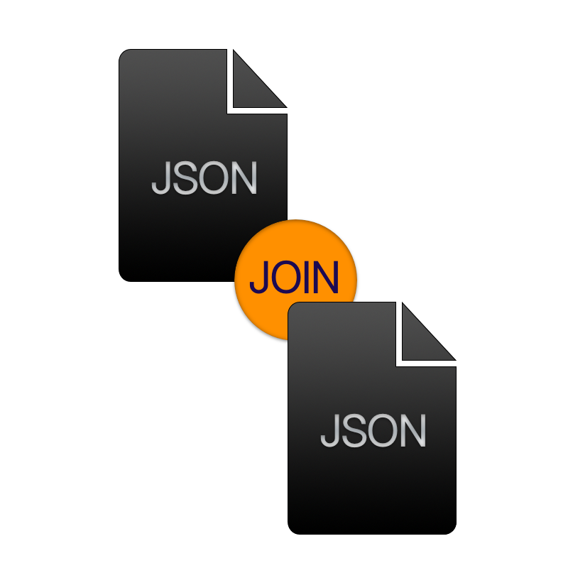

 MySQL 8.0 got GA last month (April 2018) and that means it is time to get serious about getting back the relational in schema-less storage using the JSON datatype and JSON functions.
I have been very sceptic about JSON support in a RDBMS. The way XML was used in the past to store information, using functions to ‘query’ unindexable data.. a bit messy. This same mess exists with JSON, but it’s much easier to parse (=faster), easier to read, and still easy to mess it up (for nostalgics).
This post is about getting back relational with JSON document storage, joining tables using schema-less stuff. Yes, I used a buzz word!
Context
You have two tables employees and departments (similar to MySQL’s Employees Database). Both tables store information about their entities in a JSON document (tables have pretty much same DDL).
For this example, we have one constraint: an employee must belong to exactly one department.
We use Generated Columns to get information from the document store indexed, and used in constraints.
-- DROP TABLE IF EXISTS employees, departments;
CREATE TABLE departments (
id INT NOT NULL,
doc JSON,
PRIMARY KEY (id)
);
CREATE TABLE employees (
id INT NOT NULL,
doc JSON,
PRIMARY KEY (id),
dep_id INT AS (doc->>'$.department_id') STORED NOT NULL
);
-- Due to MySQL Bug#88128, we create index separately
ALTER TABLE employees ADD INDEX (dep_id);
ALTER TABLE employees ADD FOREIGN KEY (dep_id) REFERENCES departments (id);
INSERT INTO departments (id, doc) VALUES (1, '{"name": "DevOps"}');
INSERT INTO departments (id, doc) VALUES (2, '{"name": "Accounting"}');
INSERT INTO employees (id, doc) VALUES (1000,
'{"given_name": "Alice", "department_id": 1}');
INSERT INTO employees (id, doc) VALUES (1101,
'{"given_name": "Bob", "department_id": 2}');
Problem
We are using a GraphQL API, and it would help to get a JSON payload we can easily unmarschal in Go.
How do we get the department information together with the employee information in one single JSON document?
Solution
A constraint exists on the employee table: if you insert a JSON document for
which no department_id exists in the department table, you will get a foreign
key violation:
mysql> INSERT INTO employees (id, doc) VALUES (1101,
'{"given_name": "Walter", "department_id": 5}');
ERROR 1452 (23000): Cannot add or update a child row: a foreign key
constraint fails...
Using this relation, we can join the tables:
SELECT e.id, d.id FROM employees AS e JOIN departments AS d ON e.dep_id = d.id;
Note that the department_id is stored in the JSON document (and also in the index column).
To merge the JSON department document information in the JSON doc of the employee,
we use JSON_INSERT().
Lets say we want all information of Alice, and her department:
SELECT JSON_INSERT(e.doc, '$.department', d.doc) AS doc
FROM employees AS e JOIN departments AS d ON e.dep_id = d.id WHERE e.id = 1000;
The result (using JSON_PRETTY()):
{
"department": {
"name": "DevOps"
},
"given_name": "Alice",
"department_id": 1
}
Resulting Context
We store information about employees and departments in a (more-or-less) schema-less way into the MySQL tables.
We ensure that each employee has exactly one, existing department assigned. Using JSON_INSERT we can join
the two tables and retrieve information in one document.
Conclusion
I am starting to like the way normalization gets a bit redefined. Where it makes sense, you normalize the data from your document store which you need to have indexed, or have constraints on them: the data you use to actually query. All other data is are pretty much useless to have in columns for it.
You can still select partial data from the document using the JSON functions, but no optimization in the world will make it as fast as having columns. But, the way we use APIs, and in Go with structs: loading all data is pretty much needed without having messy code.